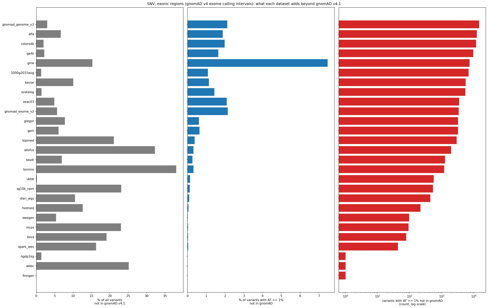
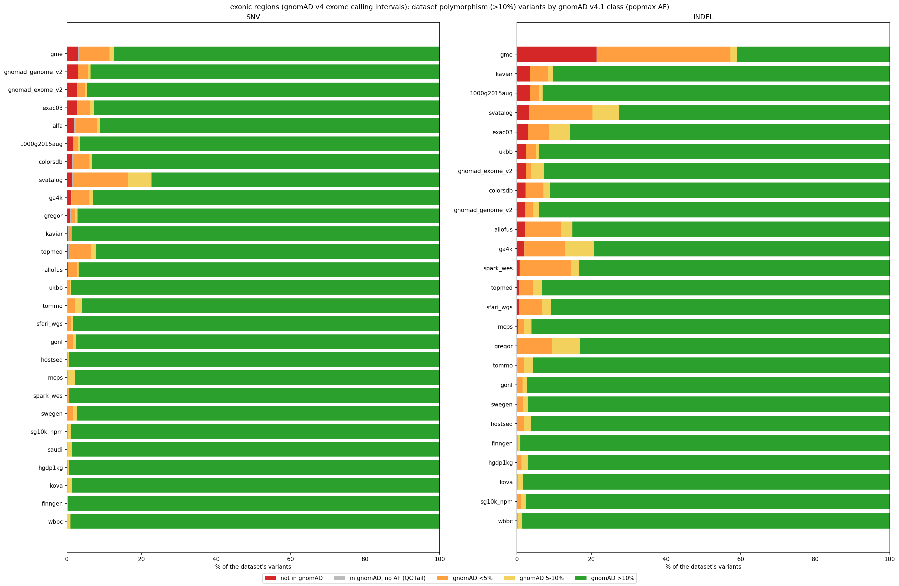
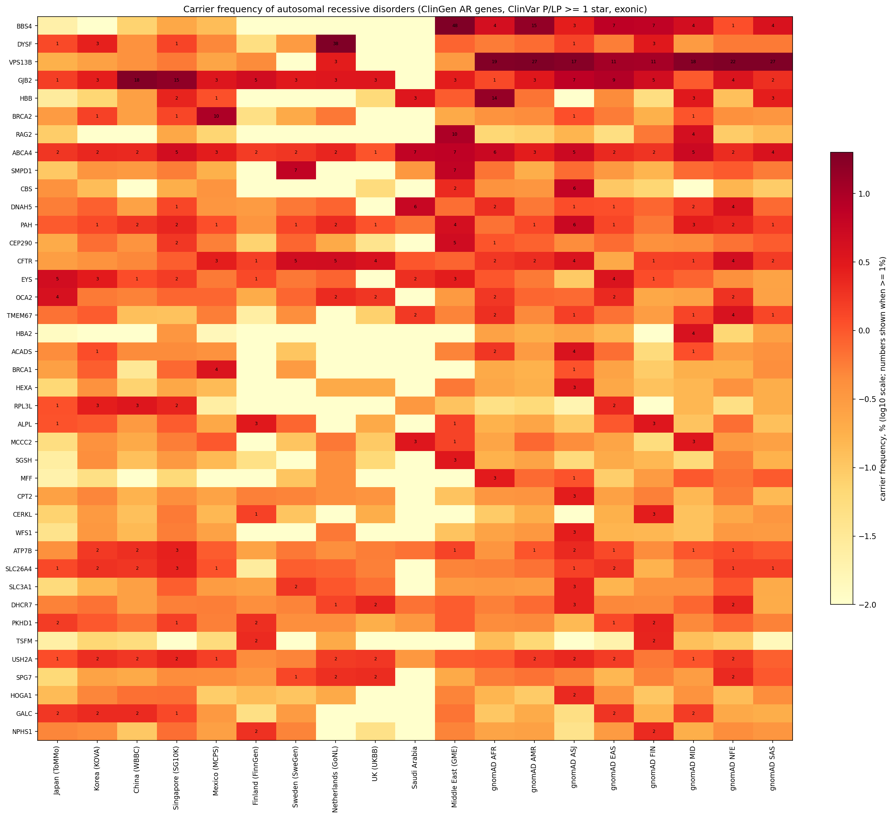
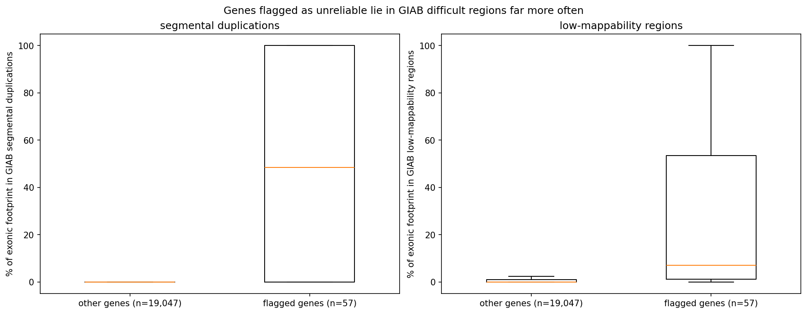
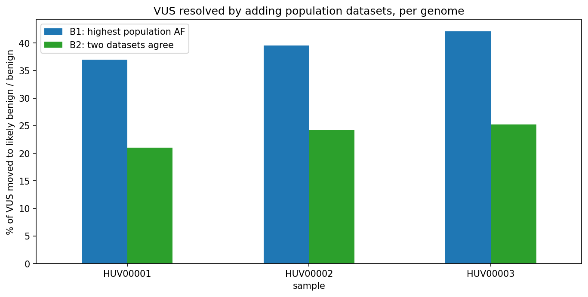

A harmonised comparison of 27 human allele-frequency datasets with gnomAD v4.1
November 2026
Background. Allele frequency is the first filter in clinical variant interpretation: ACMG/AMP criteria BA1, BS1 and PM2 all rest on it, and almost every pipeline takes it from gnomAD. gnomAD under-represents many populations, including Middle Eastern and Iranian patients, and dozens of national and cohort frequency resources now exist. Whether they should be added, and which ones, has not been tested systematically.
Methods. We harmonised 27 frequency datasets (2.06 billion GRCh38 variants) into one notation, applied uniform quality rules, and compared each with gnomAD v4.1, separately for exonic regions (gnomAD exome calling intervals; gnomAD exomes as reference) and non-exonic regions (gnomAD genomes). We measured variants absent from gnomAD, how gnomAD classifies each dataset’s polymorphisms and rare variants, population structure, population-enriched pathogenic variants, recessive carrier frequencies, genes with untrustworthy frequencies, and the effect on ACMG classification of three real genomes.
Results. gnomAD v4.1 already contains more than 99.5% of the common (AF ≥ 1%) coding SNVs of almost every dataset. The Middle East is the exception: 7.5% of GME’s common coding SNVs and 26% of its common coding indels are absent from gnomAD. Outside exons gnomAD’s 76,215 genomes miss 5–11% of the common variants of several genome cohorts. Filtering on gnomAD’s overall AF misclassifies 6.7–11.7% of East Asian and Mexican polymorphisms as rare; its population maximum reduces this to 0.1–1.9%. Frequencies resting on a single dataset are mostly errors: 127 of 140 apparently common pathogenic ClinVar variants had no second source. Adding population frequencies to ACMG classification resolved 23.6% (two-dataset rule) to 39.7% (any dataset) of VUS in three genomes, with no variant moving towards pathogenic. We found and corrected seven classes of errors in widely used public frequency resources.
Conclusions. For coding variants gnomAD v4.1 is nearly sufficient if filtering uses its population maximum; Middle Eastern patients need GME (and, ideally, an Iranian resource); genome analyses need additional genome cohorts. External frequencies should be used only when two independent datasets agree, and frequency evidence in 57 duplicated or hypervariable genes should not be applied automatically.
Clinical laboratories classify thousands of variants per patient. The first and most powerful filter is population frequency: a variant too common in healthy people cannot cause a rare, penetrant disease (ACMG BA1, BS1), and a variant absent from controls gains moderate evidence for pathogenicity (PM2). These rules are only as good as the reference.
gnomAD v4.1 (730,947 exomes, 76,215 genomes) is the default reference, but its participants are mostly of European ancestry, and Middle Eastern individuals are a small group (3,031 exomes and genomes in its MID group, as reported by Koch et al. 2026). For patients from under-represented populations two errors follow: a variant common in their population but rare in gnomAD keeps PM2 and stays on the candidate list (a false lead or a false pathogenic call), and a benign variant cannot be ruled out, so it remains a VUS.
Many other frequency resources now exist: national biobanks and genome projects (Japan, Korea, China, Singapore, Mexico, Finland, Sweden, the Netherlands, the UK, Saudi Arabia, the Greater Middle East), large US programmes (TOPMed, All of Us), aggregators (ALFA, Kaviar) and long-read cohorts. Our own pipelines (ANNOVAR and VEP annotation, ACMG classification with BIAS-2015) can read any of them. We needed evidence to decide:
Data. 27 datasets (table in Supplementary Methods): the ANNOVAR hg38 tables of gnomAD v4.1 (reference), gnomAD v2, ExAC, Kaviar, 1000 Genomes, GME and All of Us; UCSC’s combined varFreqs bigBed (TOPMed, ToMMo, KOVA, MCPS, FinnGen, SweGen, Saudi, SPARK, SFARI WGS); and 13 UCSC cohort VCFs (ALFA, CoLoRSdb, GA4K, GoNL, GREGoR, HGDP+1kG, HostSeq, SG10K, SVatalog, UK Biobank, WBBC, SCHEMA, SGDP). Cohort sizes range from 101 to 530,000 people; technologies include imputed arrays, exomes, short-read and long-read genomes.
Harmonisation and quality. Every allele was written in one notation (trimmed, left-anchored, multi-allelic sites split). Alleles with zero count or failing their source’s filters were dropped, and frequencies based on fewer than 100 alleles were ignored. gnomAD AF = 0 (seen only in QC-failed genotypes) was treated as missing, and missing gnomAD exome group frequencies were taken from gnomAD genomes. Unreliable sources were excluded after checking (GenomeAsia frequencies; ALFA indels, whose positions are shifted by one base).
Regions and reference. Exonic = inside gnomAD v4 exome calling intervals (170 Mb), compared with gnomAD exomes (genomes where the exome has no AF); non-exonic = everything else, compared with gnomAD genomes only. Each comparison used three gnomAD views: overall AF, population maximum across eight groups, and the dataset’s matching group.
Analyses. (1) share of each dataset absent from gnomAD, all and common variants; (2) gnomAD class of each dataset’s polymorphisms (> 10%) and rare variants (< 5%); (3) population PCA and marker SNVs; (4) ClinVar variants common in a population but rare in gnomAD, with the number of independent datasets supporting the frequency; (5) gene-level variant burden against gnomAD, validated against GIAB difficult regions; (6) ClinVar pathogenic variants enriched ≥ 10× in a population (founder candidates) and recessive carrier frequencies; (7) ACMG classification of three whole genomes with BIAS-2015, using gnomAD alone (A), adding the highest population AF (B1), or adding only a frequency on which two datasets agree (B2).
Reproducibility. One driver script regenerates every table and figure from a 21 GB archive of derived data (verified to reproduce all tables exactly) or from scratch; software versions, input checksums and reference values are recorded (Supplementary Methods, Reproducibility protocol).
| Dataset | Common exonic SNVs absent from gnomAD | Common exonic indels absent | Common non-exonic SNVs absent |
|---|---|---|---|
| GME (Middle East) | 7.46% | 26.4% | exome only |
| ToMMo (Japan) | 0.31% | 0.24% | 7.18% |
| TOPMed | 0.38% | 0.86% | 7.65% |
| SG10K (Singapore) | 0.12% | 0.48% | 5.12% |
| SweGen (Sweden) | 0.02% | 0.05% | 6.21% |
| GoNL (Netherlands) | 0.63% | 0.09% | 5.12% |
| Saudi Arabia | 0.26% | — | 0.34% |
| UK Biobank | 0.13% | 2.31% | 0.20% |
| FinnGen | 0.00% | 0.00% | 0.07% |
Most of what other datasets add beyond gnomAD is rare variation. For common coding variants only GME adds substantially. Outside exons gnomAD’s genome set is much smaller, and several genome cohorts add 5–8% of their common variants (long-read cohorts up to 11%, mostly in regions short reads cannot call).

Of each country’s polymorphisms (> 10%), gnomAD calls rare (< 5%): 6.7–11.7% with overall AF (East Asian and Mexican cohorts), 0.1–1.9% with the population maximum, and 2.6–5.7% against the matching gnomAD group. GME is again the exception: 8.2% of its polymorphisms are rare in every gnomAD group, including the Middle Eastern one. In the opposite direction, rare variants of a country are rarely common in its own gnomAD group (0.02–0.8%), but 5.6–12.2% of European and Saudi rare variants are common in some other group (mostly African), so a local database alone is not enough either.

A PCA on allele frequencies places every country cohort on its matching gnomAD group; Saudi Arabia lies near but apart from gnomAD’s Middle Eastern group, and South Asia lies between the Middle East/Europe and East Asia, as reported independently by the Pakistan Genome Resource. We selected 1,000 candidate SNVs that separate the Middle East from every other group, for ancestry inference once validated on genotypes.
140 ClinVar pathogenic/likely pathogenic variants are ≥ 5% in at least one dataset but rare in gnomAD. 127 of them rest on one dataset, and on inspection these are data errors (for example a pathogenic MYH7 variant at 74% in ALFA, CFTR F508del at 77% in SVatalog, a BRCA2 deletion at 47% in GME). Only 12 are supported by two or more datasets, mostly in duplicated genes; GJB2 V37I (7.6–9.8% in Singapore and China, ≤ 4.2% in gnomAD) is the clear real example.
Of 1,621 pathogenic variants enriched ≥ 10× in a population, 32 pass all quality filters; GME takes part in 17, including candidate Arab founder alleles in ATP6V1B1, ASPA, GSR and ABCC6. Carrier frequencies for 1,447 recessive genes reproduce known values (CFTR 4.4% in Europeans, HEXA 3.5% in Ashkenazi, HBB 13.7% in Africans, GJB2 9–18% in East Asians) and show PAH at 4.3% in GME.

Gene-level burden against gnomAD mainly identifies technical problems. 57 genes are consistently out of line across datasets (olfactory receptor, ZNF, PRAMEF, MUC, HLA, KIR and TAS2R families and others). They lie in GIAB segmental duplications far more than other genes (median 48% of their exonic sequence vs 0%, p = 3 × 10⁻²⁴).

| Genome | VUS (gnomAD only) | Resolved, any dataset (B1) | Resolved, two datasets agree (B2) | P/LP downgraded (B2) | Towards pathogenic |
|---|---|---|---|---|---|
| HUV00001 | 5,191 | 37.0% | 21.0% | 1 of 11 | 0 |
| HUV00002 | 5,863 | 39.5% | 24.2% | 1 of 8 | 0 |
| HUV00003 | 6,462 | 42.1% | 25.2% | 3 of 9 | 0 |
| All three | 17,516 | 39.7% | 23.6% | 5 of 28 | 0 |
The five downgrades under the two-dataset rule were a deletion that gnomAD’s own lookup had missed (PEX5, a correction), two variants in duplicated genes (TUBB8, GOLGA8R) and one variant already flagged as too common by gnomAD.

We found and corrected: shifted indel positions in UCSC’s ALFA file; unreliable GenomeAsia frequencies; a column order in UCSC’s combined bigBed that differs from its own schema; impossible frequencies from tiny allele numbers (SPARK, ToMMo); gnomAD AF = 0 rows meaning “QC-failed”; missing group frequencies in gnomAD exomes; and encoded indel alleles in ANNOVAR’s hg38 1000 Genomes tables. Each would have changed our conclusions.
The Pakistan Genome Resource (173,303 participants; Koch et al., Nature 2026) reports 25% of synonymous and 49% of loss-of-function variants absent from gnomAD. Our large under-represented cohorts show the same gradient and size (pLoF:synonymous ratio 1.9–2.2 vs 1.96), and the same population structure.
| Area | Current practice | Recommendation | Evidence |
|---|---|---|---|
| gnomAD frequency used for BA1/BS1/PM2 | overall AF, or gnomAD’s grpmax | Population maximum over all eight gnomAD groups, including MID and FIN (gnomAD’s grpmax omits them); exome AF in exons, genome AF where the exome has none; AF = 0 treated as missing | 3.2 |
| Middle Eastern and Iranian patients | gnomAD only | Add GME as a frequency source; plan an Iranian resource (Iranome or in-house exomes) | 3.1, 3.2, 3.5 |
| Genome sequencing, non-coding variants | gnomAD genomes | Add TOPMed and population genome cohorts (ToMMo, SG10K, SweGen, GoNL), e.g. through the harmonised union file with its is_in column |
3.1 |
| Using non-gnomAD frequencies | not used, or any single source | Apply BA1/BS1 from external datasets only when two independent datasets agree (B2); otherwise flag for review | 3.4, 3.7 |
| Duplicated and hypervariable genes | frequency rules applied automatically | Do not apply BA1/BS1/PM2 automatically in the 57 flagged genes (BED file provided); require manual review | 3.6 |
| Known common pathogenic alleles | — | Keep a reviewed list of high-frequency P/LP variants (e.g. GJB2 V37I, founder alleles) so they are not discarded by BA1 | 3.4, 3.5 |
| Carrier screening | generic gene lists | Use population-specific carrier frequencies to prioritise genes for Middle Eastern couples (e.g. PAH, GJB2, HBB) | 3.5 |
| Frequency annotation QC | — | Check that gnomAD matches indels correctly (a missed match turned a common PEX5 deletion pathogenic); validate any new frequency source against gnomAD before use | 3.7, 3.8 |
| Automation | — | The BIAS-2015 wrapper (population AF with the two-dataset rule) and the union file are ready to integrate; expect ≈ 24% fewer VUS per genome | 3.7 |
The study uses summary frequencies, not genotypes, so it cannot address homozygosity or individual burden. Datasets differ in technology and quality control, and some came through third-party conversions. Small cohorts (Saudi ≈ 300, GoNL 498) give noisy frequencies. No Iranian dataset was available, and South Asia is represented only by gnomAD and part of SG10K. ClinVar favours well-studied populations, so founder and carrier estimates elsewhere are lower bounds. The ACMG test covers three genomes; a patient cohort is needed to estimate the clinical yield precisely.
For coding variants, gnomAD v4.1 is nearly sufficient if filtering uses its population maximum rather than the overall frequency. Middle Eastern patients are the clear exception and need GME now and an Iranian resource next. Genome analyses benefit from additional genome cohorts. External frequencies are useful only with safeguards: two independent datasets must agree, frequency evidence in duplicated genes needs review, and every new source must be checked. With these rules, a quarter of VUS can be resolved without introducing pathogenic misclassifications.
Scripts, result tables and figures, and the full report are in this repository (scripts/, results/, reports/). Inputs are public resources (Supplementary Methods); no individual-level data are shared. Every result can be regenerated with bash scripts/run_all.sh all-kept from the derived-data archive, or all-raw from the public sources.